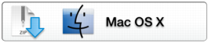
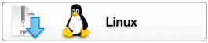
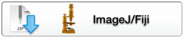
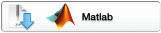
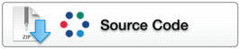

OMERO @VERSION@ Downloads
Clients | Plugins | Additional | Servers | Virtual Appliance | API | Python | Code | Components | Previous versions
-
Information on this release of OMERO is in the release announcement
-
Full documentation is available as web documentation or PDF documentation and there are user guides for the clients on our Help website
-
A standard OMERO user just needs to download the client package with the same major version as their institutional server e.g. 5.0 clients with the 5.0 server
-
If you do not have an institutional server, you can apply for an account on our Demo server or download the Virtual Appliance to install your own version locally.
OMERO client downloads
| Clients | Size | File Name | Checksum |
|---|---|---|---|
 |
@WIN_CLIENTS_SIZE@ | @WIN_CLIENTS_BASE@ | @WIN_CLIENTS_MD5@ (MD5) |
|  | @MAC_CLIENTS_SIZE@ | @MAC_CLIENTS_BASE@ | @MAC_CLIENTS_MD5@ (MD5) |
|  | @LINUX_CLIENTS_SIZE@ | @LINUX_CLIENTS_BASE@ | @LINUX_CLIENTS_MD5@ (MD5) |
-
Each client package includes OMERO.insight, OMERO.importer and OMERO.editor and requires Java Version 1.6 or higher. OMERO.web is part of the server package, so individual users do not need to install it locally.
-
Full instructions for installing the clients are on the Help website: Getting Started with OMERO.insight Version @VERSION@
OMERO plugin downloads
| Plugins | Size | File Name | Checksum |
|---|---|---|---|
|  | @IJ_CLIENTS_SIZE@ | @IJ_CLIENTS_BASE@ | @IJ_CLIENTS_MD5@ (MD5) |
|  | @MATLAB_CLIENTS_SIZE@ | @MATLAB_CLIENTS_BASE@ | @MATLAB_CLIENTS_MD5@ (MD5) |
-
Instructions for downloading and installing the ImageJ plugin: Using ImageJ with OMERO
-
Instructions for using the Matlab plugin are at: OMERO Matlab language bindings
Additional functionality
-
Additional clients and plugins developed by our partners in the wider OME consortium are available at: Partner Projects
-
The functionality of the existing OMERO clients can be extended using scripts, for details and scripts see: Script Sharing
OMERO server downloads
| Servers | Size | File Name | Checksum |
|---|---|---|---|
| @SERVER33_SIZE@ | @SERVER33_BASE@ | @SERVER33_MD5@ (MD5) | |
| @SERVER34_SIZE@ | @SERVER34_BASE@ | @SERVER34_MD5@ (MD5) | |
| @SERVER35_SIZE@ | @SERVER35_BASE@ | @SERVER35_MD5@ (MD5) |
-
Download the server matching the Ice version you are using (note that the client(s) should work with any version of the server)
-
If you are using Windows, we recommend you default to using OMERO.server with Ice 3.4. However, you can download an Ice 3.5 version built against Python 2.7 from our Ice downloads page which will allow you to install the OMERO.server Ice 3.5 version if you wish
-
Installation instructions are available for: Unix platforms, Microsoft Windows
-
Server upgrade instructions are at: OMERO.server upgrade
OMERO Virtual Appliance download
-
The OMERO Virtual Appliance allows you to try out an OMERO server on your local machine
-
Instructions for using the Virtual Appliance are at: Virtual Appliance
OMERO API documentation
-
The OMERO API documentation is also available to read on the web here
-
Zipped files of API documentation for other versions of Ice are available as part of the build components
OMERO python downloads
| Package | Size | File Name | Checksum |
|---|---|---|---|
| @PYTHON33_SIZE@ | @PYTHON33_BASE@ | @PYTHON33_MD5@ (MD5) | |
| @PYTHON34_SIZE@ | @PYTHON34_BASE@ | @PYTHON34_MD5@ (MD5) | |
| @PYTHON35_SIZE@ | @PYTHON35_BASE@ | @PYTHON35_MD5@ (MD5) |
-
Download the Python bundle matching the Ice version you are using.
Checking out the code
| Source Code | Size | File Name | Checksum |
|---|---|---|---|
|  | @SOURCE_CODE_SIZE@ | @SOURCE_CODE_BASE@ | @SOURCE_CODE_MD5@ (MD5) |
-
Instructions for installing the source code can be found at: Installing OMERO from source
Download components
-
All components available for this version of OMERO are available here
Previous versions
-
We recommend that you always use the most recent release version of the OMERO software, but if you need to use a previous version, they are all available from the main downloads folder